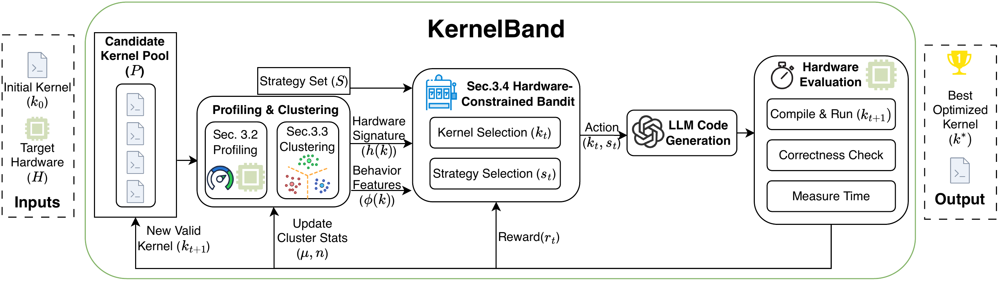

KernelBand: Steering LLM-based Kernel Optimization via Hardware-Aware Multi-Armed Bandits
Steers LLM-based GPU kernel optimization with multi-armed bandits, hardware-aware pruning, and runtime-behavior clustering to balance exploration and exploitation.
PaperPDFCodeOpenReview
BibTeX
@inproceedings{ran2026kernelband,
title = {KernelBand: Steering LLM-based Kernel Optimization via Hardware-Aware Multi-Armed Bandits},
author = {Dezhi Ran and Shuxiao Xie and Mingfang Ji and Anmin Liu and Mengzhou Wu and Yuan Cao and Yuzhe Guo and Hao Yu and Linyi Li and Yitao Hu and Wei Yang and Tao Xie},
booktitle = {Proceedings of the 43rd International Conference on Machine Learning},
series = {Proceedings of Machine Learning Research},
volume = {306},
pages = {103717--103738},
publisher = {PMLR},
year = {2026},
url = {https://proceedings.mlr.press/v306/ran26b.html}
}